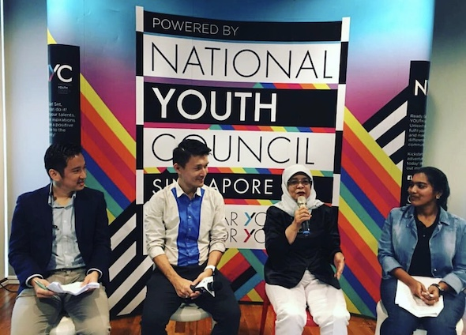

I practice product management during the day and perform standup comedy at night. I work with product managers, data scientists, designers, marketers, business development executives, and engineers to deliver the right product to the right users at the right time.
I was one of the three co-founders of honestbee. I left in 2018 to pursue my own path. In her halycon days, honestbee was in eight markets - Singapore, Malaysia, Thailand, Philippines, Indonesia, Japan, Taiwan, Hong Kong - delivering food and groceries to customers that loved her service. I had the privilege of working with a dedicated, intelligent, and capable team of engineers, product managers, data scientists, and designers who have found new and better homes.
In 2019, I traveled from Singapore to London by land using buses and trains. Along the way I performed standup comedy culminating in winning the June edition of the brutal King Gong at The Comedy Store London. I have performed standup comedy live in Singapore, Kuala Lumpur, Bangkok, Ho Chi Minh, Hanoi, Hong Kong, Chongqing, Beijing, Moscow, St. Petersburg, Tallinn, Warsaw, Berlin, Frankfurt, Amsterdam, and London.
Because of the late, inimitable and generous Vernon Lewis I have hosted and performed at the Magners International Comedy Festival. I was also once Comedy Central Asia's comedian of the month.
For the startup part of my life, I love moderating panels and interviewing noteworthy individuals. I have had the honor of moderating sessions with President Tony Tan and President Halimah Yacob. I enjoy facilitating the telling of stories and communication of messages.
